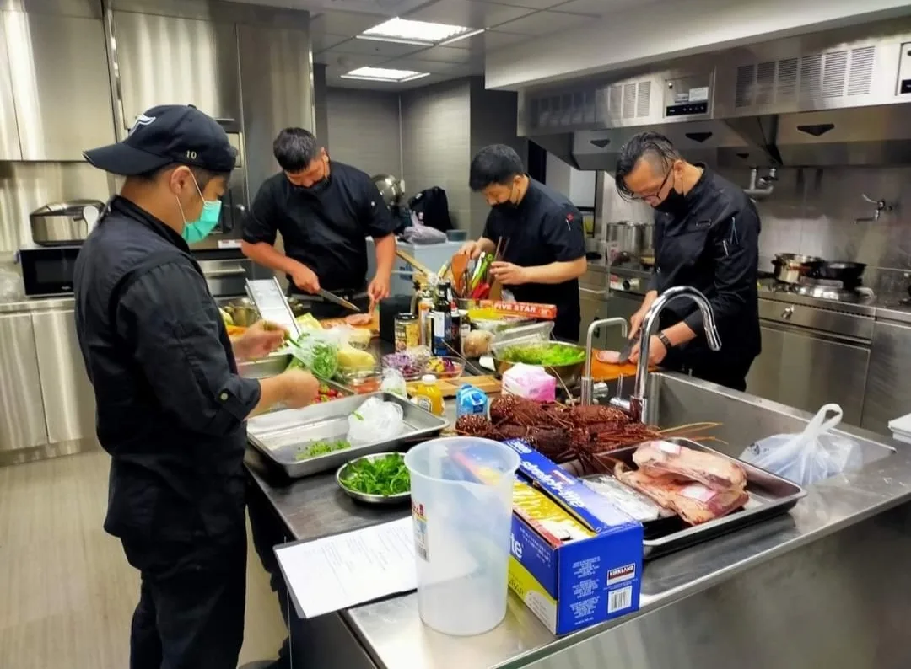

無明火廚房也能辦宴席？台北豪宅到府私廚規劃指南
豪宅 IH 爐、中島廚房、董事長私人宴請的實務做法
重點摘要：只要現場有基本電源、水源與流理台，即使豪宅採用無明火 IH 爐，舒苑也能攜帶爐具與設備，並把部分工序先在中央廚房完成，在自宅完成位上套餐。重視隱私的企業主與董事長宴請，從食材採購、現場烹調到餐後清潔由同一團隊負責。
先看結論
可以。多數豪宅雖然採用無明火 IH 爐與開放式中島，但只要現場有基本電源、水源與可用的流理台，到府私廚就能執行。重點不在「有沒有明火」，而在事前場勘、設備攜帶與工序安排，以及賓客隱私與社區規範是否處理好。
為什麼豪宅與企業主偏好到府私廚，而不是餐廳包廂？
隱私
在自宅或自己的空間招待客戶與長輩，不必擔心在餐廳被遇見或被拍到，賓客名單與談話內容更容易保密。
時間彈性
不用配合翻桌時間，開席、上菜節奏與用餐時長可依賓客狀況調整。
客製化
菜單可依賓客喜好與飲食禁忌調整，酒水也能依場合安排，細節與餐廳相比更有彈性。
如果需要更高規格的保密安排，也可另行簽署保密協議。
無明火、中島空間有限，怎麼處理？
舒苑團隊依現場條件做三件事：
1. 事前場勘
確認電力負載、插座位置、水源、排油煙狀況與流理台尺寸，提前決定哪些菜色適合現場完成。
2. 攜帶設備
現場只有 IH 爐或電磁爐時，團隊會攜帶可攜式爐具、保溫器具與必要的專業器具補足火力與出餐能力。
3. 工序前置
部分工序在中央廚房先完成（半預製），現場只做最後烹調與擺盤，降低油煙、噪音與備餐占用空間。
更完整的場地條件說明，可參考私廚需要提供廚房嗎？各種場地條件的應對方式。
到府私廚、飯店外燴、餐廳包廂差在哪？
三種做法沒有絕對好壞，差別在隱私、彈性與場地責任。下表是一般性的比較，飯店與餐廳的價格與規則請以各家當時的報價為準。
| 比較項目 | 到府私廚（舒苑） | 飯店外燴 | 餐廳包廂或私人招待所 |
|---|---|---|---|
| 隱私度 | 在自己的空間，賓客與動線自行掌握 | 在飯店場地，視場地規劃而定 | 需到店用餐，包廂隔音與動線依店家而定 |
| 菜單彈性 | 依賓客喜好與忌口客製 | 多以飯店既有菜單為基礎調整 | 多以店內菜單或固定套餐為主 |
| 用餐時間 | 可依賓客節奏調整 | 依場地租借時段 | 依訂位與翻桌時段 |
| 場地需求 | 需要基本電源、水源與流理台，事前場勘 | 使用飯店場地與設備 | 由店家提供 |
| 善後 | 團隊負責整理廚房與清潔 | 由場地方處理 | 由店家處理 |
| 起跳預算 | 6–8 人 NT$38,000 起 | 依飯店與場地報價 | 依店家與包廂低消 |
信義豪宅社區的實際做法
信義區豪宅社區管理嚴謹，出入需事先登記。舒苑在信義豪宅社區家宴案例中，服務 15 人、中西式套餐，事前提供團隊名單給物業登記，工作人員統一制服並配戴識別證，並與物業確認送貨動線與設備搬運時間，避免影響其他住戶。
如果家中是無明火廚房，這些流程再加上場勘與設備安排，就是完整的前置作業。
預算與包含項目
小型家宴（6–8 人）NT$38,000 起，企業宴席（10–15 人）NT$48,000 起，VIP 頂級餐宴 NT$68,000 起。費用包含食材、主廚、器具、餐盤、清潔、保險與運送，可開立統一發票。詳細拆解見到府私廚價格。
預約前先確認場地
電力、水源、流理台、爐具類型與社區登記，是豪宅預約前最常被問到的項目。下載檢核表填好後傳給我們，團隊就能更快評估菜單與報價。
豪宅到府私廚常見問題
到府私廚需要提前多久預約？
一般建議提前 7–14 天預約，旺季與節慶建議一個月以上；豪宅社區需要先做物業登記，可再預留幾天。實際檔期以團隊確認為準。
餐具與清潔由誰負責？
舒苑的報價包含食材、主廚、器具、餐盤、清潔、保險與運送，宴席結束後會整理廚房與流理台。報價單會逐項列明包含與另計的項目，另計項目以書面報價為準。
有最低人數或最低消費嗎？
建議 6–8 人以上以確保服務品質。小型家宴（6–8 人）NT$38,000 起，企業宴席（10–15 人）NT$48,000 起，VIP 頂級餐宴 NT$68,000 起，實際依人數、菜單、場地與服務形式報價。
舒苑有投保食品安全相關保險嗎？
有。舒苑已投保南山產物產品責任保險，登記與保險資料公開於安心指南頁面，可自行查證。
住家只有 IH 爐或電磁爐，菜色會受限嗎？
會有部分調整。團隊事前會確認廚房條件，攜帶可攜式爐具補足火力，並把適合的菜色改為電磁爐可執行的作法，部分工序在中央廚房先完成，現場只做最後烹調與擺盤。建議預約前先讓主廚場勘或提供廚房照片。
延伸閱讀
想知道您的專屬報價嗎？
提供活動日期、人數與場地，我們將提供最適合的到府私廚方案。